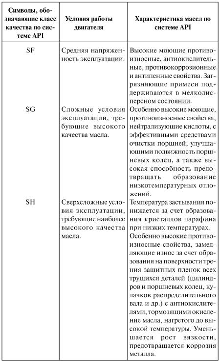
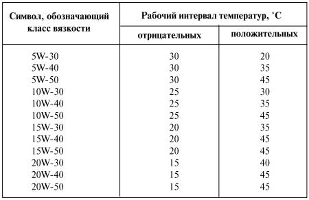
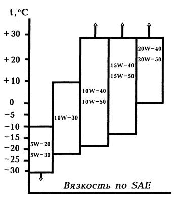
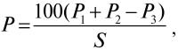
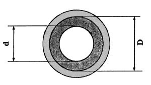
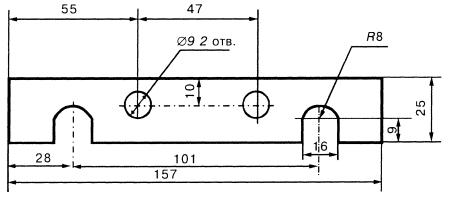

Моторные масла
Масляная система служит для обеспечения надежности, долговечности и экономичности двигателя автомобиля. Чтобы получить высокие показатели этих характеристик, автомобилист должен хорошо знать свойства моторных масел и легко разбираться во всем их разнообразии.
Классификация моторных маселИмпортные и отечественные моторные масла классифицируются по двум параметрам: по эксплуатационным свойствам – система API (разработана Американским нефтяным институтом) и по вязкостно-температурным свойствам – система SAE (разработана Американским обществом автомобильных инженеров).
Класс качества масел для карбюраторных двигателей обозначается символами SF; SG; SH. Чем дальше от начала алфавита вторая буква, тем выше уровень качества масла (табл. 6 и 7).
Таблица 6

Масла универсальные для карбюраторных и дизельных двигателей легковых автомобилей содержат в маркировке двойные символы SF/CD; SF/CE; SG/CC и др.[3]
Как следует из таблицы, чем меньше цифра перед индексом W, тем более низкую температуру выдерживает масло. Чем больше цифра за индексом W, тем выше выдерживаемая маслом температура.
Масла с приведенными выше обозначениями всесезонные, работающие при широком интервале температур окружающей среды.
Менее распространенные зимние масла имеют обозначения OW, 5W, 10W, 15W, 20W, 25W, а летние – 20, 30, 40, 50. И в зимних, и в летних марках масел меньшая цифра соответствует более низкой вязкости.
Наряду с продукцией известных иностранных фирм – Саstrol, Texaco, Spectrol, Teboil Moniaste и других – прошли серию сертификационных испытаний и допущены к применению отечественные масла нового поколения, имеющие класс качества по API-SE/СС.
Трансмиссионные маслаТак же, как и моторные, трансмиссионные масла подразделяются по уровню качества (система API) и классу вязкости (система SAE).
В зависимости от уровня качества по API масла маркируются буквами «GL» и цифрами (ступенями), стоящими после букв в диапазоне от 1 до 6. Например, GL-1, GL-2.
Первые три ступени еще находят применение в автомобилях старых марок.
Масла классов GL-4 предназначены для коробок передач и редуктора заднего моста без гипоидного зацепления. GL-5 – для коробки передач и редуктора заднего моста с гипоидным зацеплением. GL-6 для тех же агрегатов, что и GL-5, только с особенно высокими требованиями к противоизносным свойствам.
По вязкостно-температурным свойствам по SAE масла подразделяются на зимние: 75 W, 80 W, 85 W, летние (в обозначении без буквы «W»): 90, 110 и всесезонные: 75 W-90, 80 W-90, 85 W-90 с возможностью работать при широком интервале температур окружающего воздуха (от –40 до +20 °C, от –30 до +35 °C, от –20 до +35 °C, от –15 до +45 °C). Чем меньше цифра перед индексом W, тем более низкую температуру выдерживает масло перед тем, как загустеть на холоде.
Заводы Волгограда, Кстова, Москвы, Уфы, Ангарска, Омска, Перми, Рязани выпускают трансмиссионные масла по классу качества API с маркировкой GL-5 и по вязкостно-температурным свойствам по SAE 85 W-90. Уфа выпускает масло по SAE 80 W-90.
Импортные моторные масла делятся на минеральные, синтетические и полусинтетические.
Минеральные масла массового применения приготовлены на минеральной (нефтяной) основе. На этикетках фирменной упаковки надпись «Минеральное» и обозначения по API SG и SAE 10 W-30, 20 W-50. Цена этих масел относительно невысокая. Применяются они при эксплуатации в умеренном климате (без сильных холодов и большой жары).
Синтетические масла изготовлены из продуктов с заданными свойствами путем химического синтеза. Опыт эксплуатации двигателей с применением синтетических масел свидетельствует об их преимуществах. Синтетическое масло с высоким содержанием эфиров дает улучшение характеристик трения. Низкий износ наблюдается в первые минуты работы двигателя. Экономится топливо. Увеличивается срок службы масла: втрое выше, чем у минерального. Обладает необычайно высокой текучестью, что позволяет облегчить пуск двигателя при низких температурах. Это масло и при нагревании частей двигателя свыше 150 °C обеспечивает такую же стабильную масляную пленку, как и масла класса вязкости SAE 40.
На этикетках фирменной упаковки имеется надпись: «Синтетическое» и обозначение класса качества API SG. По SAE это всесезонные масла широкого интервала температур: 5W-40. Однако высокая стоимость (в среднем в 3–5 раз выше стоимости минеральных масел) ограничивает спрос на них. Эти масла не следует применять в изношенном двигателе в связи со значительным их расходом.
Полусинтетическое масло. Все более популярными становятся полусинтетические моторные масла. Они приготавливаются на минеральной основе путем смешивания с синтетическими добавками, причем синтетическая часть может составлять до 50 %.
Полусинтетические масла отличаются улучшенными вязкостно-температурными свойствами, хорошей моющей способностью – сохраняется чистота в цилиндропоршневой группе двигателя, а это. в свою очередь. способствует повышению работоспособности масла.
На этикетках фирменной упаковки имеется надпись: «Полусинтетическое». Как правило, это всесезонное масло широкого диапазона по SAE 5W 30. Цена наполовину ниже цены синтетического масла.
Импортные и отечественные моторные и трансмиссионные масла с заявленной маркировкой и техническими свойствами гарантируют требуемые класс вязкости и уровень качества. Содержащиеся в масле различного рода присадки обладают достаточной защитной эффективностью.
Дополнительные виды присадок, добавляемые к маслам нового поколения, рекомендуемые знакомыми всем рекламами («увеличивают срок службы двигателя, его мощность, предотвращают его износ, уменьшают расход топлива, масла, затраты на обслуживание и ремонтные работы» и т. д.), могут дать негативный эффект.
Увлечение всякими присадками к маслу в те времена, когда существовал масляный голод, было объяснимо желанием улучшить недостаточно хорошие характеристики моторных масел М 53/10Г1,[4] и М6/12Г1 и трансмиссионного ТАД 17И. А в наше время, когда широко распространены высококачественные масла, уже включающие 10–20 % присадок, любые виды эксплуатационных присадок к фирменным маслам теряют всякий смысл.
Расход масла зависит от состояния двигателя, культуры его эксплуатации, дорожных условий, времени года и особенно – от степени износа деталей цилиндропоршневой группы.
Расход масла непостоянен и меняется в зависимости от километров пробега автомобиля.
Минимальный расход масла на угар (расход) составляет 0,2–0,3 % от расхода топлива, а нормативный – 0,5 %. Если на 100 км пути расходуется 10 л топлива, то нормируемый расход масла составит 40 г. Обычно нормальным считается расход от 0,15 до 0,25 л на 1000 км.
Расход масла в большой степени зависит от его вязкости.
Качество масла большой роли не играет.
При выборе моторного масла необходимо руководствоваться вязкостно-температурными характеристиками по SAE (рис. 2).

Рис. 2. Вязкость по SAE при постоянной температуре воздуха.
Соблюдение сроков чистки фильтрующих элементов, поддержание температуры масла в оптимальном режиме (80–90 °C) – важнейшие факторы, от которых зависит расход масла.
Объем масла в смазочной системе должен быть постоянным. Если уровень масла находится вблизи нижней отметки на щупе, ухудшаются условия теплообмена, температура масла возрастает, его вязкость снижается и уплотнение зазоров в сопряжениях становится менее прочным. Силы трения растут, трущиеся детали нагреваются. Ускоряется старение масла. Поэтому надо следить, чтобы уровень масла в летнее время года всегда был на верхней отметке щупа. Зимой достаточно иметь минимальный уровень масла – это ускорит его разогрев до рабочей температуры.
Давление в масляной системе также должно тщательно контролироваться. Давление зависит от величины зазоров в подшипниках скольжения, частоты вращения коленчатого вала и температуры двигателя. Давление может быть недостаточным при неисправности редукционного клапана, масляного насоса, его привода, масляного манометра или избыточным при засорении каналов системы смазки. Оптимальное давление масла зависит от типа двигателя и определяется в каждом случае отдельно в зависимости от частоты вращения коленчатого вала и скорости автомобиля.
Расход масла зависит также от степени изношенности поршневых колец, поршней и цилиндров при отсутствии утечек масла. Если расход масла превышает норму, двигатель нуждается в ремонте.
Расход масла в г/100 км определяется по формуле:

где Р1 – масса залитого масла в двигатель, г;
Р2 – масса свежего масла, долитого между заменами, г;
Р3 – масса слитого, отработанного масла, г;
S – пробег автомобиля между заменами масла по спидометру, км.
Для более точного измерения необходимо учитывать погрешность счетного узла спидометра. Для этого счетчик пути очень просто тарируется – на хорошем шоссе по километровым столбам. Количество масла удобнее измерять объемными единицами. Его удельный вес – 0,8 г/см3, 1 л весит 800 г.
Качество масла можно проверить, используя капельный контроль. Этим же контролем автолюбитель получает информацию о процессах, происходящих в двигателе, что позволяет диагностировать техническое его состояние. Для этого рекомендуется вынуть маслоизмерительный щуп из картера и капнуть горячим маслом (после выключения двигателя) на белую фильтровальную бумагу (промокашку). Это надо проделать сразу же при заправке свежего масла, а затем – через 5 или 7 тыс. км пробега, постепенно сокращать интервал до каждой тысячи километров пробега.
Полученные на бумаге кольца с первой и последующих промежуточных пробных капель откладывают в определенное место так, чтобы они не касались друг друга, и делают надпись с указанием километража и даты взятия пробы. Затем их используют для оценки состояния качества масла и диагностирования двигателя.
Первая проба показывает на кольце равномерно окрашенное светло-желтое пятно. Последующие пробы уже показывают на бумаге три концентрических пятна. Первое – центральное, почти белое, второе – среднее, серое, третье – крайнее, тоже почти белое, но чуть темнее, чем на первой пробе.
Если при очередной пробе на бумаге центральное пятно потемнело, а кольцо вокруг центрального пятна приобрело коричневый цвет (масло окислилось), следует измерить диаметр центрального пятна и диаметр кольца коричневого цвета (рис. 3).

Рис. 3. Метод капельной пробы для оценки степени загрязнения масла: d – диаметр центрального кольца расплыва капли масла; D – диаметр кольца с нерастворимыми в масле загрязнениями.
Расчетным путем характер загрязнения масла можно определить по формуле:
где d – средний диаметр темного центрального пятна, мм; D – средний диаметр коричневого кольца с нерастворимыми в масле загрязнениями, удерживаемыми во взвешенном состоянии, мм.
Полученный результат является численным показателем моющей способности масла.
Негодным, утратившим свое моющее свойство и подлежащим замене, считается масло, если численный показатель загрязнения меньше 0,3. Если полученная величина больше 0,3, то масло еще способно уменьшать образование нагаролако отложений и проявлять свои противоокислительные свойства.
Автолюбителям, желающим продлить срок службы двигателей своих автомобилей и обеспечить надежную их работу при снижении эксплуатационных расходов, можно дать несколько рекомендаций.
1. Перед запуском двигателя жалюзи радиатора (если они есть) должны быть закрыты, а кран отопителя салона прикрыт.
После запуска двигателя следует как можно быстрее поднять до 60 °C температуру охлаждающей жидкости. В холодную погоду надо избегать длительного прогрева двигателя на холостом ходу. Трогаться с места можно лишь как только установится давление масла. Двигатель начнет устойчиво работать. Движение автомобиля начинать с невысокой скорости.
2. Термостат должен безупречно работать.
3. При низких температурах воздуха радиатор обязательно должен быть накрыт утепляющим фартуком.
Если двигатель оборудован принудительной вентиляцией, крыльчатку вентилятора желательно снять.
4. Поддон картера быстро охлаждается и его необходимо утеплить, установив специальный щиток, предохраняющий его от потока холодного воздуха.
5. Не следует допускать работу двигателя на богатой смеси, что приводит к уменьшению полноты сгорания, т. е. необходимо контролировать работу карбюратора и состояние свечей. Работа воздушных и масляных фильтров также подлежит контролю. Их загрязнение приводит к обогащению топливовоздушной смеси. При избытке масла, износе цилиндров двигателя, большой частоте вращения коленчатого вала масло забрасывается в камеру над поршнем, где сгорает, увеличивая расход масла на угар. Минимальный расход масла на угар, как отмечено выше, составляет 0,2–0,3 % от расхода топлива.
6. Все, что способствует загрязнению масла: перебои в работе системы зажигания, повреждение выпускного клапана, отсутствие искры на одной из свечей – должно быть устранено.
7. Требуется периодически очищать систему вентиляции картера двигателя. В противном случае наблюдается повышенное загрязнение масла.
8. Фильтрующий элемент следует менять одновременно с заменой масла, учитывая при замене последнего количество километров пробега, а также фактическое состояние качества масла с помощью капельного контроля.
9. Перевод автомобиля на газовое топливо в меньшей степени, чем бензин, загрязняет масло, и оно дольше сохраняет свои свойства. Расход масла на угар снижается, что приводит к снижению износа деталей цилиндропоршневой группы двигателя.
10. В случае утечки или расхода масла на угар нужно доливать в двигатель свежего масла. Старый автомобиль страдает повышенными не только потерями масла в результате износа цилиндров, поршней, колец и т. д., но и просачиванием масла через уплотнители. Если регулярный осмотр водителем с целью обнаружения утечки масла не принес результатов, а утечка ведет к загрязнению двигателя, обрастанию масляных подтеков пылью и в итоге – к перегреву, то для предотвращения утечки масла следует применять присадку против течи. Эта присадка содержит компоненты, восстанавливающие эластичность уплотнений, устраняет в них зазоры и останавливает утечку масла. Сразу же после заливки присадки рекомендуется проехать на автомобиле некоторое расстояние в течение часа. Присадка не засоряет фильтры и трубопроводы и полностью растворяется во всех моторных маслах.
11. Хроническая болезнь «волговских» моторов – подтекание масла через задний коренной подшипник. Здесь уже никакая присадка не поможет. И кажется, что только ремонт двигателя спасет положение. Но можно обойтись и менее радикальным способом. Снимите поддон, для чего следует:
• снять правое переднее колесо;
• снять маятниковый рычаг;
• повернуть руль в предельное правое положение;
• слить масло из поддона;
• отвернуть 21 гайку с поддона и снять его;
• снять поддонную прокладку;
• отвернуть специальным ключом две гайки с внутренним шестигранником размером 8 мм и снять корпус держателя сальников у заднего конца коленчатого вала.
Заменить асбестовый шнур (сальниковая набивка) новым длиной 140 мм и вложить его в гнездо держателя сальника. Установить в пазы держателя сальника две резиновые прокладки (флажки) и их боковую поверхность, выступающую из паза, смазать мыльным раствором, а на верхнюю часть флажков положить немного термостойкого герметика. На держатель сальника снизу наденьте изготовленное приспособление из полосовой стали толщиной 4 мм и затяните его двумя гайками М 8 (рис. 4).

Рис. 4. Приспособление к держателю сальника.
Установите держатель сальника на место и затяните гайки через пазы приспособления, а после затяжки приспособление с держателя снимите. Установите поддонную прокладку и сам поддон. Подтягивание гаек поддона начинайте с его середины. Установите на место маятниковый рычаг, правое колесо и залейте слитое масло в двигатель.